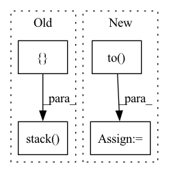

Pattern ID :23734

Before Change
// See paper p13
thetas = torch.arange(self.n_heads, dtype=torch.float32) * (2.0 * math.pi / self.n_heads)
grid_init = torch.stack([thetas.cos(), thetas.sin(), thetas.cos()], -1) // TODO
// [NumHeads, FeatureLevels, NumPoints, Offset]
grid_init = (grid_init / grid_init.abs().max(-1, keepdim=True)[0]).view(self.n_heads, 1, 1, 3).repeat(1, self.n_levels, self.n_points, 1)
After Change
constant_(self.sampling_offsets.weight.data, 0.)
// See paper p13
grid_init = torch.cartesian_prod(torch.tensor([-1, 0, 1]), torch.tensor([-1, 0, 1]), torch.tensor([-1, 0, 1])).to(dtype=torch.float32)
if self.n_heads == 26: // sample in 26 directions
grid_init = grid_init[torch.nonzero(torch.abs(grid_init).sum(dim=1)).squeeze()] // Get rid of origin
elif self.n_heads == 6: // sample in 6 directions
grid_init = grid_init[torch.nonzero(torch.logical_and(torch.abs(grid_init).sum(dim=1) < 2, torch.abs(grid_init).sum(dim=1) > 0)).squeeze()]
else:
raise ValueError("Only nheads of value 26 or 6 are supported.")
In pattern: SUPERPATTERN
Frequency: 3
Non-data size: 4
Instances
Fragment ID: 73966333
Project Name: bwittmann/transoar
Commit Name: fa86cda78f79e61cc6617f73268e684f56636b3f
Time: 2021-12-16
Author: bastian.wittmann@tum.de
File Name: transoar/models/ops/modules/ms_deform_attn.py
M Class Name: MSDeformAttn
N Class Name: MSDeformAttn
M Method Name: _reset_parameters(1)
N Method Name: _reset_parameters(1)
M Parent Class: nn.Module
N Parent Class: nn.Module
M File Name: transoar/models/ops/modules/ms_deform_attn.py
N File Name: transoar/models/ops/modules/ms_deform_attn.py
M Start Line: 66
M End Line: 70
N Start Line: 66
N End Line: 75
'>
Before Change
motion_data = torch.tensor(np.transpose(self.m[index], (2, 0, 1)), dtype=torch.float32)
target = torch.tensor(self.label[index], dtype=torch.float32)
inputs = torch.stack([appearance_data,motion_data],dim=0)
if torch.cuda.is_available():
inputs = inputs.to("cuda")
target = target.to("cuda")
After Change
if torch.cuda.is_available():
// inputs = inputs.to("cuda")
appearance_data = appearance_data.to("cuda")
motion_data = motion_data.to("cuda")
target = target.to("cuda")
return (appearance_data,motion_data), target
'>
Fragment ID: 73966337
Project Name: tvs-ai/pytorch_rppgs
Commit Name: 2f108d0e1567542b0736ab979967c59ff06bd69c
Time: 2023-06-07
Author: spicyyeol@gmail.com
File Name: rppg/datasets/DeepPhysDataset.py
M Class Name: DeepPhysDataset
N Class Name: DeepPhysDataset
M Method Name: __getitem__(2)
N Method Name: __getitem__(2)
M Parent Class: Dataset
N Parent Class: Dataset
M File Name: rppg/datasets/DeepPhysDataset.py
N File Name: rppg/datasets/DeepPhysDataset.py
M Start Line: 18
M End Line: 28
N Start Line: 18
N End Line: 30
'>
Before Change
reservoir.forward = self.eprop._decorate_hidden_forward(reservoir.forward, reservoir.name)
output_layer.forward = self.eprop._decorate_forward(output_layer.forward, output_layer.name)
for _ in progress_bar:
x_pred = []
x_pred.append(self.true_time_series[:, 0, :].clone())
forward_tensor = self.true_time_series[:, 0, :].clone().to(reservoir.device)
hh = None
for t in range(1, self.true_time_series.shape[-2]):
forward_tensor, hh = unpack_out_hh(reservoir(forward_tensor, hh, t=t-1))
forward_tensor, _ = unpack_out_hh(output_layer(forward_tensor, None, t=t-1))
x_pred.append(forward_tensor)
// eligibility_traces = dy_dw_local(y=forward_tensor, params=self.params)
// self.eprop.eligibility_traces = eligibility_traces
// batch_loss = self.eprop.apply_criterion(forward_tensor, self.true_time_series[:, t].to(forward_tensor.device))
// learning_signals = self.compute_learning_signals(loss_at_t)
// errors = self.eprop.compute_errors(forward_tensor, self.true_time_series[:, t])
// learning_signals = self.eprop.compute_learning_signals(errors)
// self.eprop.update_grads(errors, batch_loss)
forward_tensor.detach_()
hh = recursive_detach(hh)
// if t % self.update_each == 0:
// self.eprop._make_optim_step()
self.eprop._make_optim_step()
x_pred = torch.stack([t.cpu() for t in x_pred], dim=1)
pvar = PVarianceLoss()(x_pred, self.true_time_series.to(x_pred.device))
mse = torch.nn.MSELoss()(x_pred, self.true_time_series.to(x_pred.device))
progress_bar.set_postfix({"pvar": to_numpy(pvar).item(), "MSE": to_numpy(mse).item()})
pvars.append(to_numpy(pvar).item())
After Change
inputs = self.raw_time_series[:, 0, :].clone().unsqueeze(1).to(self.model.device)
for _ in range(100):
val_x_pred = self.model.get_prediction_trace(inputs)
pvar = PVarianceLoss()(val_x_pred, self.raw_time_series.to(val_x_pred.device))
val_pvars.append(to_numpy(pvar).item())
print(f"Validation PVariance: {np.mean(val_pvars):.3f}")
return x_pred, self.raw_time_series
'>
Fragment ID: 73966338
Project Name: neurotorch/neurotorch
Commit Name: da8d4065502c761ccf6e28e47dd189e3b5488140
Time: 2023-01-31
Author: 50332514+JeremieGince@users.noreply.github.com
File Name: src/neurotorch/learning_algorithms/debug_e_prop_v5.py
M Class Name: SimplifiedEpropFinal
N Class Name: SimplifiedEpropFinal
M Method Name: train(4)
N Method Name: train(4)
M Parent Class:
N Parent Class:
M File Name: src/neurotorch/learning_algorithms/debug_e_prop_v5.py
N File Name: src/neurotorch/learning_algorithms/debug_e_prop_v5.py
M Start Line: 120
M End Line: 153
N Start Line: 115
N End Line: 144